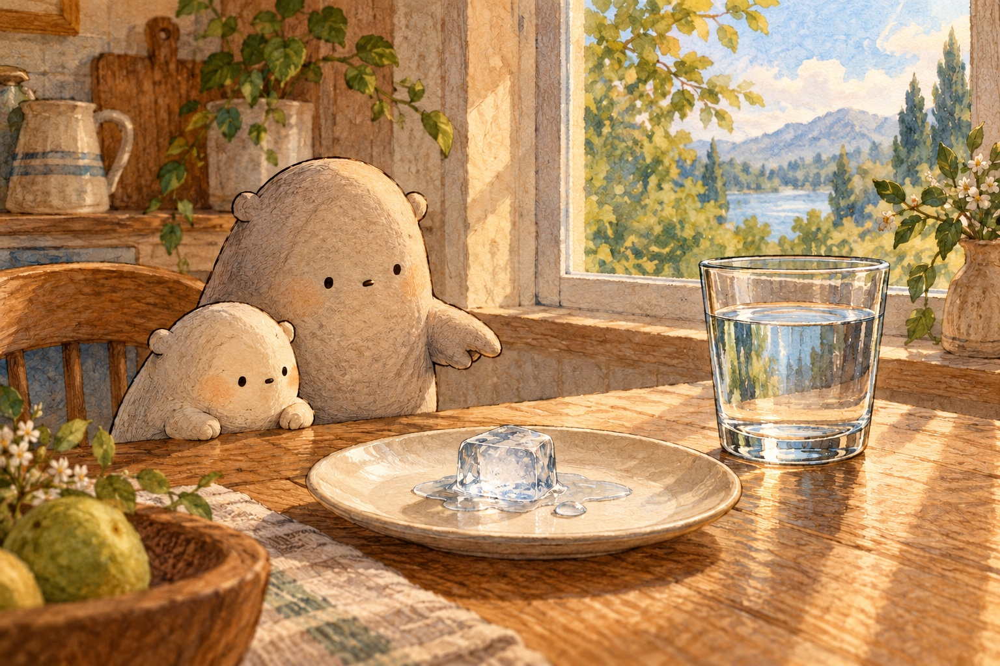

WONDER DAILY AGE 8 · GRADE 3 · READING · 1 / 2
Six clues hidden in water
H2O: Why Water Is Special
Name __________________________ Date _______________

Little held a clear glass to the light. Tiny molecules moved inside. Every water molecule has the same recipe: two hydrogen atoms joined to one oxygen atom. H2O records that recipe.

An ice cube softened into a puddle. Solid ice had melted into liquid water. Water can also become a gas called water vapor. These changes rearrange the molecules, but they remain water molecules.

Little placed drops on wax paper. Each curved into a bead instead of spreading flat. Water molecules attract one another, pulling the surface together. Two nearby beads joined into one larger drop.
- water
- a substance made of H2O molecules
- molecule
- atoms joined as one tiny unit
- atom
- a tiny piece of matter
- hydrogen / oxygen
- the H and O atoms in H2O
- ice
- solid water
- melt / freeze
- solid to liquid / liquid to solid
- vapor
- water in its gas state
- surface tension
- a liquid surface resisting a pull
- float
- stay at a liquid's top
- dissolve
- spread through a liquid in tiny pieces